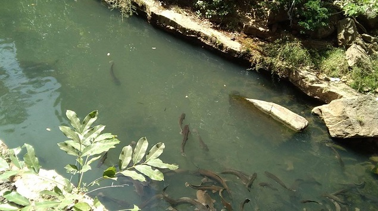
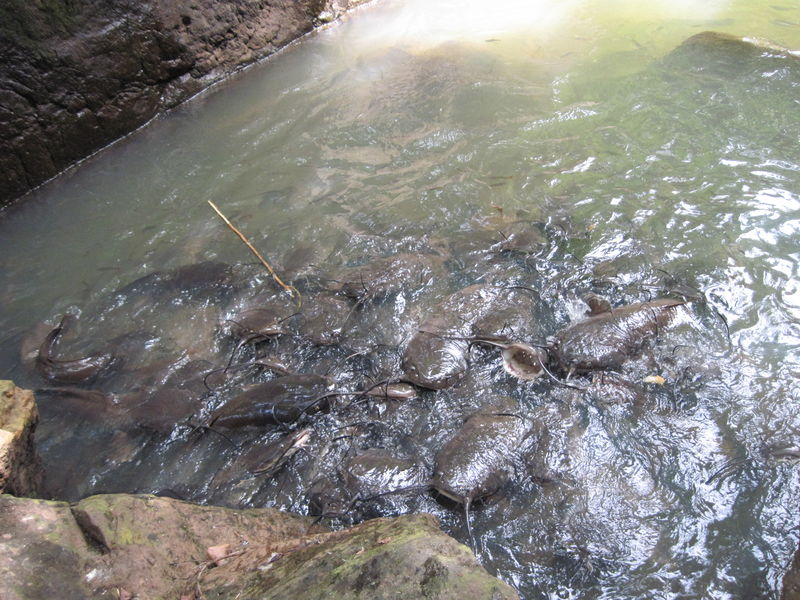
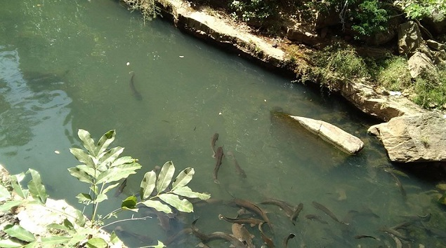
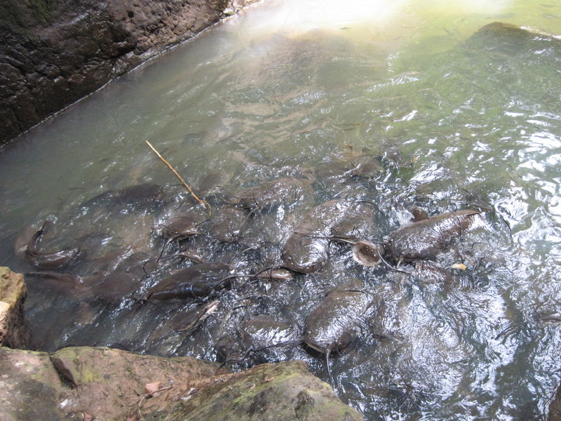

Présentation
Les Bassins Sacrés de Dafra sont un site emblématique situé à la périphérie de Bobo-Dioulasso, au Burkina Faso. Ce lieu naturel niché au creux d’une vallée boisée est considéré comme sacré par les populations bobo. C’est un lieu de pèlerinage spirituel où se mêlent croyances animistes, traditions ancestrales et rituels sacrificiels. Le site est également réputé pour ses silures sacrés, des poissons que les visiteurs ne peuvent toucher ni pêcher. Les silures de Dafra sont des poissons sacrés vénérés par les Bobos mandare, une communauté autochtone du Burkina Faso. Ils sont considérés comme les ancêtres du fondateur de Sya et sont profondément respectés. Le Dafra, une mare où vivent ces silures, est un lieu de culte et attire de nombreux visiteurs en quête de grâces ou de protection.
Rituels et Croyances
Les rituels pratiqués à Dafra sont d'une importance capitale dans la spiritualité bobo. Lors de certaines cérémonies, des sacrifices d’animaux (souvent des coqs ou des moutons) sont faits pour solliciter la protection ou les bénédictions des ancêtres et des esprits de l’eau. Le site est gardé avec respect, et chaque geste y est empreint de solennité et de foi. Il est recommandé aux visiteurs de se faire accompagner par un guide initié.
- Sacralité:
Les silures de Dafra sont considérés comme sacrés et ne peuvent être ni tués ni mangés. Leur mort est traitée avec le plus grand respect et ils sont inhumés avec dignité.
- Vénération:
Les silures sont vénérés par la communauté Bobo Mandarè, qui les voit comme des aïeux ou des protecteurs.
- Lieu de culte:
Dafra est un lieu de culte où les habitants peuvent demander des faveurs ou exprimer leur gratitude aux silures.
- Restrictions:
Certaines règles doivent être respectées au Dafra, comme l'interdiction de porter rouge ou des bijoux en or.
Importance Culturelle et Touristique
Au-delà de sa dimension spirituelle, Dafra est un lieu d’un grand intérêt touristique. Il attire aussi bien les curieux que les chercheurs, les photographes et les amoureux de la nature. Son ambiance mystérieuse, son environnement naturel préservé et sa signification culturelle en font une destination incontournable pour découvrir l’âme profonde du pays bobo.
- Importance culturelle:
Les silures de Dafra jouent un rôle important dans la culture et la spiritualité des populations locales et de la région.
- Attraction touristique:
La mare aux silures de Dafra attire de nombreux visiteurs, intéressés par son caractère sacré et les rituels qui y sont pratiqués.
Galerie
.jpeg)
.jpeg)
.jpeg)
.jpeg) 



Localisation
Les Bassins Sacrés de Dafra se trouvent à une dizaine de kilomètres au sud de Bobo-Dioulasso. Le site est accessible par la route en direction de Banfora, avec un petit sentier qui mène à pied jusqu’aux bassins.